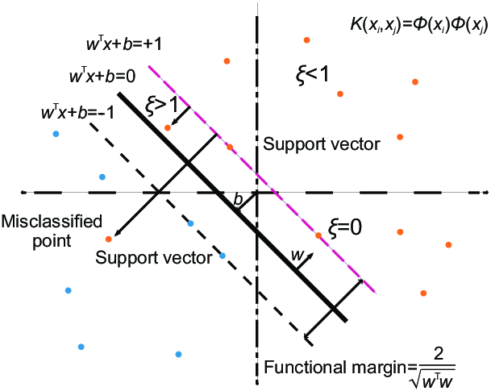
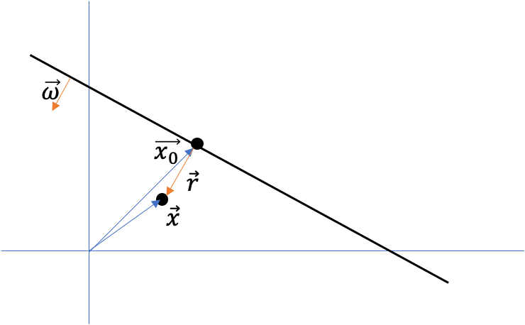

一. 概念
支持向量机（Support Vector Machine，SVM）是经典的二分类模型，其直观地定义为特征空间上，间隔最大（最鲁棒）的线性分类器。SVM学习的优化目标是最大化间隔，可以转化为凸二次规划（convex quadratic programming）问题。在线性模型的基础上，引入核函数（核技巧）可以得到非线性模型。
二. 硬间隔(Hard margin)
SVM试图找到位于两类样本正中间的超平面，因为其鲁棒性最好，泛化能力最强。

上图实线即划分超平面。在线性模型中，超平面可通过方程$\mathbf{w}^T\mathbf{x}+b=0$描述，其中$\mathbf{w}$是超平面的法向量（决定超平面方向），$b$为位移项（决定超平面和原点之间的距离）。
假设超平面能将所有训练样本正确分类（硬间隔，hard margin），那么对于所有标记为+1的点，有$\mathbf{w}^T\mathbf{x}_i+b>0$，对所有标记为-1的点，有$\mathbf{w}^T\mathbf{x}_i+b<0$。若超平面存在，那么可以对$\mathbf{w}$和$b$进行线性放缩，使得任意$\left(\mathbf{x}_i, y_{i}\right) \in D$：
$$\mathbf{w}^T\mathbf{x}_i+b\geq+1,\quad y_i = +1 \\ \mathbf{w}^T\mathbf{x}_i+b\leq-1,\quad y_i = -1$$使上式等号成立的训练样本称为支持向量（support vector），其为距离超平面最近的样本点，距离为$\gamma=\frac{1}{\Vert\mathbf{w}\Vert}$（样本主空间中任意点$\mathbf{x}$，到超平面的距离为$r=\frac{\left|\mathbf{w}^{T} \mathbf{x}+b\right|}{\Vert\mathbf{w}\Vert}$）。定义间隔（margin）为两个异类支持向量到超平面的距离之和，为$\gamma=\frac{2}{\Vert\mathbf{w}\Vert}$。

证明：设$\mathbf{x}_0$为$\mathbf{x}$在超平面$(\mathbf{w}, b)$上的投影（向量）。由上图可知，$\mathbf{x} = \mathbf{x_0} + \mathbf{r}$，且$\mathbf{r}=\frac{\mathbf{w}}{\Vert\mathbf{w}\Vert} \cdot r$，代入可得$\mathbf{x_0} = \mathbf{x} - \frac{\mathbf{w}}{\Vert \mathbf{w} \Vert} \cdot r$。又因为点$\mathbf{x_0}$在超平面上，所以有$\mathbf{w}^T\mathbf{x_0}+b=0$。消去$\mathbf{x_0}$，得到$$\mathbf{w}^T\mathbf{x_0}+b
= \mathbf{w}^T(\mathbf{x} - \frac{\mathbf{w}}{\Vert \mathbf{w} \Vert} \cdot r)+b
= 0 \Rightarrow r = \frac{\mathbf{w}^T\mathbf{x}+b}{\Vert \mathbf{w} \Vert}$$，取距离为正值（法向量可能为图示反向），即$r = \frac{|\mathbf{w}^T\mathbf{x}+b|}{\Vert \mathbf{w} \Vert}$。
SVM的目标是找到具有最大间隔（maximum margin）的划分超平面，即$\max_{\mathbf{w},b} \frac{2}{\Vert \mathbf{w} \Vert}$，将目标函数写成最小化（$\max_{\mathbf{w},b} \frac{2}{\Vert \mathbf{w} \Vert} \Rightarrow \min_{\mathbf{w},b} \frac{1}{2}\Vert \mathbf{w} \Vert^{2}$），可得支持向量机的基本型：
$$\min_{\mathbf{w},b} \frac{1}{2} \Vert \mathbf{w} \Vert^2 \\\text{s.t.} \quad y_i(\mathbf{w}^T\mathbf{x}_i+b) \geq 1, \quad i=1,2,...,m$$三. SVM与凸优化
由上式可看出，SVM为凸二次规划 (convex quadratic programming) 问题，可以通过随机梯度下降（stochastic gradient descent）求解最优值。
另外，也可以使用拉格朗日乘子法（详见），通过对偶问题 (此时，强对偶性成立)求解，其降低了计算开销，并为核函数$\phi(\mathbf{x})$的使用提供基础。其拉格朗日函数如下：$$L(\mathbf{w},b,\mathbf{a}) = \frac{1}{2} \Vert \mathbf{w} \Vert^2 + \sum_{i=1}^m a_i(1-y_i(\mathbf{w}^T\mathbf{x}_i+b))$$其中，$\mathbf{a} = (a_1;a_2;…;a_m)$为拉格朗日乘子。将拉格朗日函数分别对原变量$\mathbf{w}$、$b$求偏导，并令导数为0，可得$
\mathbf{w}^{\star} = \sum_{i=1}^m a_i y_i \mathbf{x}_i$、$0 = \sum_{i=1}^m a_i y_i$（本质为KKT条件）。由于强对偶性成立，原问题与对偶问题有相同的最优解，故代入拉格朗日函数（$\min_{\mathbf{w}, b} = \mathbf{w}^{\star}, b^{\star}$，消去$\mathbf{w}$、$b$），可得对偶问题：$$
\max_{\mathbf{a}} \sum_{i=1}^m a_i - \frac{1}{2} \sum_{i=1}^m\sum_{j=1}^m a_i a_j y_i y_j \mathbf{x}_i^T \mathbf{x}_j \\
\text{s.t.} \quad \sum_{i=1}^m a_i y_i = 0, \quad a_i \geq 0, \quad i=1,2,...,m
$$只要求出对偶问题的解$\mathbf{a}^{\star}$，即可推出$
\mathbf{w}^{\star} = \sum_{i=1}^m a_i y_i \mathbf{x}_i$和$b^{\star}$(如下)，从而得到预测模型：$$\begin{split}
f(\mathbf{x}) &= \mathbf{w^{\star}}^T \mathbf{x} + b^{\star}\
&= \sum_{i=1}^m a_i^{\star} y_i \mathbf{x}_i^T \mathbf{x} + b^{\star}
\end{split}$$
为什么称为支持向量机？
由于强对偶性成立，故最优点$\mathbf{a}^{\star}$、$\mathbf{w}^{\star}$、$b^{\star}$满足KKT条件：
$$\left\{\begin{array}{l}y_i(\mathbf{w^{\star}}^T\mathbf{x}_i+b) - 1 = y_{i} f\left(\mathbf{x}_{i}\right)-1 \geq 0 , \quad i=1,2,...,m\\ a_{i}^{\star} \geq 0 , \quad i=1,2,...,m\\ a_{i}\left(y_{i} f\left(\mathbf{x}_{i}\right)-1\right)=0, \quad i=1,2,...,m\\ \mathbf{w}^{\star} = \sum_{i=1}^m a_i y_i \mathbf{x}_i, \quad 0 = \sum_{i=1}^m a_i y_i \end{array}\right.$$由第三条（complementary slackness）可得，对任何一个样本$\mathbf{x}_i$而言：
- 若$y_i f(\mathbf{x}_i) \neq 1$，则拉格朗日乘子$a_i$为0，此时样本$\mathbf{x}_i$对预测模型（$\sum_{i=1}^m a_i^{\star} y_i \mathbf{x}_i^T \mathbf{x} + b^{\star}$）无影响；
- 若$y_i f(\mathbf{x}_i) = 1$，此时样本$\mathbf{x}_i$位于最大间隔边界上，是支持向量。将支持向量表示为$(\mathbf{x}_s, y_s)$，则$y_{s}\left( \mathbf{w^{\star}}^T \mathbf{x}_{s}+b^{\star}\right)=1$，故理论上，可选取任意支持向量获得$b^{\star}$ (均值$b^{\star}=\frac{1}{|S|} \sum_{s \in S}\left(\frac{1}{y_{s}}-\mathbf{w^{\star}}^T \mathbf{x}_{s}\right)$更为鲁棒)。
它揭示了SVM的一个重要性质：最终模型只与支持向量有关。
如何求解$\boldsymbol{a}$？
为了提高优化速度，可以采用坐标下降法(coordinate descent)，其是一种非梯度优化算法，与通过梯度的最速下降不同，在坐标下降法中，优化方向是固定的。
原理：
- 多变量函数$F(\boldsymbol{a})$，每次沿一个坐标方向进行一维搜索，求得该方向上，函数的局部极小值；
- 在整个过程中，循环使用不同的坐标方向（例如，线性空间的一组基$\mathbf{e}_1, \mathbf{e}_2, \dots, \mathbf{e}_n$），循环最小化各方向上的函数值，即： $$\mathbf{x}^{k+1}_i = \underset{y\in\mathbb R}{\operatorname{arg\,min}}\; f(a^{k+1}_1,...,a^{k+1}_{i-1},y,a^k_{i+1},...,a^k_n)$$ 因而，从初始的猜测值$\boldsymbol{a}_0$，以求$F$的局部最优值，可以迭代获得$\boldsymbol{a}_0, \boldsymbol{a}_1, \boldsymbol{a}_2, \dots$的序列。
四. 核函数
核函数（kernel function）将样本从原始空间映射($f(\mathbf{x})=\mathbf{w}^T \phi(\mathbf{x})+b$)到更高维空间，使样本在该特征空间内线性可分，此时，对偶问题如下：
$$ \max_{\mathbf{a}} \sum_{i=1}^m a_i - \frac{1}{2} \sum_{i=1}^m\sum_{j=1}^m a_i a_j y_i y_j \phi(\mathbf{x}_i)^T \phi(\mathbf{x}_j) \\ \text{s.t.} \quad \sum_{i=1}^m a_i y_i = 0, \quad a_i \geq 0, \quad i=1,2,...,m $$其中，$\phi(\mathbf{x}_i)^T \phi(\mathbf{x}_j)$是样本在高维空间的内积，计算困难。为了避开计算上的复杂，可设想这样的核函数:
$$\kappa\left(\mathbf{x}_{i}, \mathbf{x}_{j}\right)=\left\langle\phi\left(\mathbf{x}_{i}\right), \phi\left(\boldsymbol{x}_{j}\right)\right\rangle=\phi\left(\mathbf{x}_{i}\right)^T\phi\left(\mathbf{x}_{j}\right)$$其将样本在高维空间的内积，通过在低维空间中计算$\kappa\left(\mathbf{x}_{i}, \mathbf{x}_{j}\right)$来获得，节约了映射过程和高维向量内积的计算开销。
通过核函数，上述对偶问题变为：
$$ \max_{\mathbf{a}} \sum_{i=1}^m a_i - \frac{1}{2} \sum_{i=1}^m\sum_{j=1}^m a_i a_j y_i y_j \kappa\left(\mathbf{x}_{i}, \mathbf{x}_{j}\right) \\ \text{s.t.} \quad \sum_{i=1}^m a_i y_i = 0, \quad a_i \geq 0, \quad i=1,2,...,m $$函数模型变为：$$\begin{aligned} f(\mathbf{x}) &=\mathbf{w^{\star}}^T \phi(\mathbf{x})+b^{\star} =\sum_{i=1}^{m} a_{i}^{\star} y_{i} \phi\left(\mathbf{x}_{i}\right)^T \phi(\mathbf{x})+b^{\star} \\ &=\sum_{i=1}^{m} a_{i}^{\star} y_{i} \kappa\left(\mathbf{x}, \mathbf{x}_{i}\right)+b^{\star} \end{aligned}$$
，若己知合适映射 cþ(.) 的具体形式，则可写出核函数 κ(. ， .).但在现实 任务中我们通常不知道 cþ(.) 是什么形式，
需注意的是，在不知道特征映射的形 式时，我们并不知道什么样的核函数是合适的，而核函数也仅是隐式地走义了
这个特征空间.于是，”核函数选择”成为支持向量机的最大变数.
核函数是一个把特征从低维空间映射到高维空间并保证计算开销与低维度空间相当的做法。 也可以说是既要马儿跑又要马儿不吃草的神奇操作。 核函数有很多，常用的有rbf，高斯核， polynomial 核等等。 核函数的研究在学界也是一个曾经一度很热的领域。 这里不提各种核的用法，想简单推导一下核的原理，顺便展现dual 形式求解的价值。